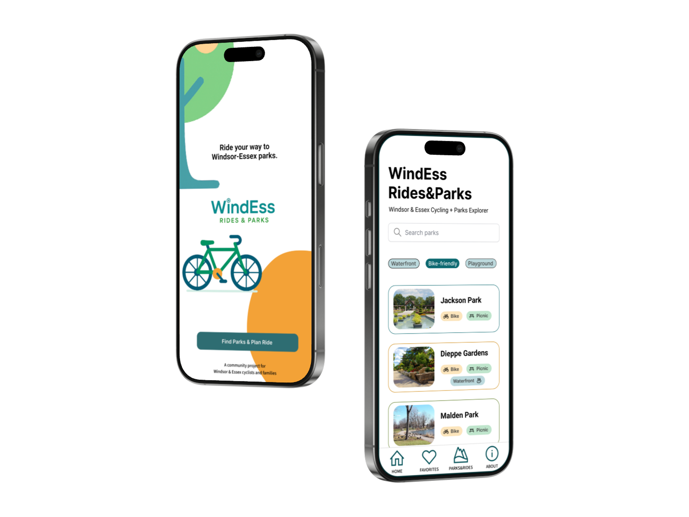

A Windsor–Essex cycling & parks explorer — from Figma wireframes to
a React prototype with OpenStreetMap routing.
Role: UX/UI Designer, Front-end Prototyper
Figma Wireframes
UI Design
React Prototype
OpenStreetMap
OSRM Routing
Mobile-first
Project Overview
WindEss helps people discover Windsor–Essex parks and plan
bike-friendly routes. I designed the flow in Figma (8 core screens)
and implemented a working prototype in React: search → park detail →
route planner → route results with an interactive map and turn-by-turn
steps.
From low-fi wireframes to a functional React prototype
Problem & Goals
Cyclists and families want safe, bike-friendly routes to local parks
with clear amenities and a simple, tap-friendly mobile UI.
Search parks by features (Bike-friendly, Waterfront, Picnic,
Playground).
See essentials fast: hero image, tags, hours, mini-map.
Plan a route with “Use my location” and get clean turn-by-turn
steps.
Prototype Walkthrough
Short demo of the React prototype: search → detail → planner → results
(OSM map + polyline + steps).
Sorry, your browser doesn’t support embedded videos.
Walkthrough of the functional prototype (mobile view)
Design Decisions
Readable hierarchy, large tap targets, and chip filters to reduce
cognitive load.
Calm outdoor palette (teal/amber/neutrals) with accessible contrast.
Generated consistent color scales & shadows using the
Color Levels Generator Figma plugin — ensuring reusable
tokens across components.
Nav pattern: keep bottom nav on lists; focused back arrow on detail.
Palette & component tokens, extended via Color Levels Generator
Tech Notes
React components with inline styles for quick iteration.
OpenStreetMap tiles (embed + React-Leaflet for interactive map).
OSRM public endpoint for bike routing; parsed steps for readable
turn-by-turn.
Accessibility: semantic labels, keyboard focus, consistent contrast.
Scope: prototype only (client-side photo upload, no auth).
Impact
Validated a full mobile-first flow — from park discovery to
turn-by-turn cycling routes — in a functional prototype.
Demonstrated how Figma design decisions translate directly into
React components and map integrations.
Established a reusable design system (palette, components, tokens)
suitable for future scaling.
Next Opportunities
Enhance routing logic with heuristics (protected lanes, slope,
traffic safety).
Extend offline capabilities: tile caching, GPX export, and
lightweight moderation for user-added photos.
Integrate open municipal data for real-time park amenities and
status updates.
Final Showcase
The design and prototype brought to life on real-device mockups,
highlighting the mobile-first experience.

Mobile-first: landing + park list on device